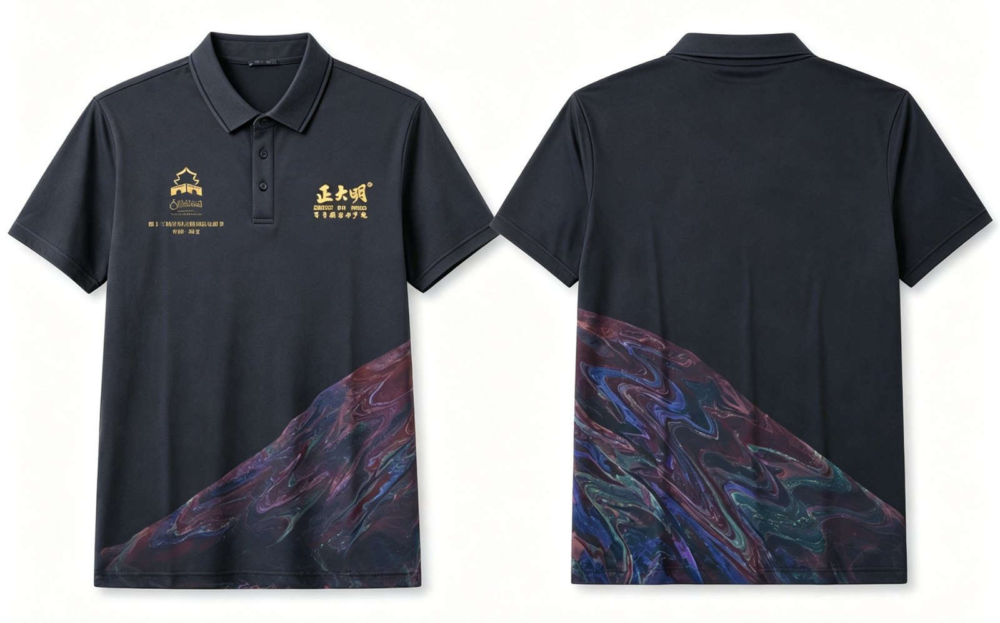
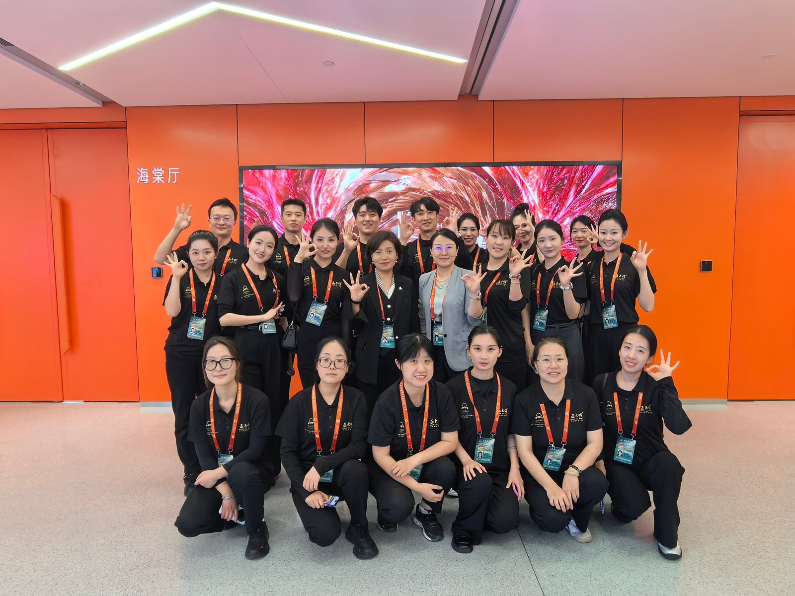
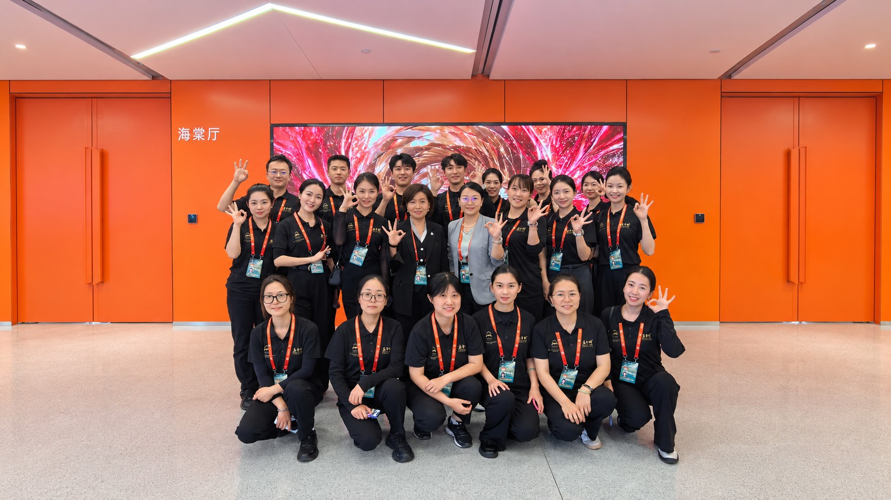

正大明は伝統的な漂漆技法を用い、第13回シルクロード国際映画祭の作業着を特注しました。裾の文様は一枚ごとに異なり、スタッフ一人ひとりが会場で「動く東洋の名刺」となります。
第13回シルクロード国際映画祭の会場で、スタッフが身に着けた黒い作業着は、遠目には簡素に見えます。しかし近づくと、誰もが目を奪われる細部に気づきます。裾に星河のように流れる鮮やかな文様。それは中国千年の大漆技法「漂漆」の、現代の衣服におけるまったく新しい表現です。
漂漆：液面に漆で「描く」
漂漆は、大漆工芸の中でもとりわけ詩的な技法です。職人は大漆を水面や特殊な液面に滴下し、漆と液体の張力、流動性、色彩の層を利用しながら、かき混ぜ、息を吹きかけ、点描するようにして自然な文様を生み出し、器物や布を浸して転写します。液面の文様は瞬時に変化するため、同じ転写は二度とできません。だからこそ漂漆作品は本質的に「唯一性」を帯びるのです。
この伝統技法を作業着に用いるにあたり、正大明はまず、大漆と布の接着、色の定着、日常的な着用に耐える堅牢性という課題を解決する必要がありました。自社の漆材料研究チームと無形文化遺産工房により、生漆の精製、漂漆液の配合、転写時間、後処理の定着まで繰り返し検証を重ね、大漆特有の深い光沢と日常着としての実用性を両立させました。



一枚ごとが一点もの、一人ひとりがブランド
工業印刷による均一な柄とは違い、この漂漆作業着は一枚ごとに裾の文様が異なります。星河が流れ落ちるようなもの、シルクロードがうねるようなもの、フィルムの光帯のようなもの。それらが集まって、会場に動く風景をつくり出しました。作業着をまとうことは単なる身份表示ではなく、東洋美学を伝える担い手となることでもあります。
黒い生地は映画スクリーンの静けさと荘重さを、金色のロゴは正大明と映画祭の公式ビジュアルを、そして裾の漂漆文様はこの衣服の「ハイライト」を担います。無形文化遺産は博物館の展示品ではなく、身にまとい、人混みに入り、国際舞台へと出ていける現代の言語になったのです。
作業着から見える、無形文化遺産の産業化の可能性
一着の作業着も、無形文化遺産を生かす器になり得ます。正大明は今回の映画祭特注を通じて、伝統的な大漆技法の衣料分野における可能性を実証しました。格式の高い国際イベントに供することも、日常の装いや文創ギフト、企業特注といった広い市場に入ることもできる。これは正大明が掲げる「伝統産業の現代化の実践」の、又一の具体化です。